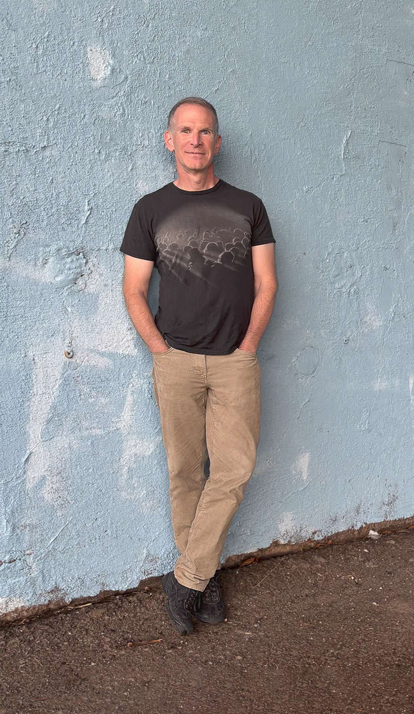

Dan Bauman · New York
Dan Bauman uses macro photography to challenge our perceptions of the ordinary. His images appear to be computer-created, encouraging the false impression that they are not photographs. In reality, his subjects, as diverse as brown sugar, table salt, and hand sanitizer, are materials familiar to us all. Bauman's technique is as innovative as it is simple: he applies these materials to an iPad screen and photographs them with a macro lens, using the screen's illumination to reveal an unexpected world of color, pattern, and complexity.
Exhibitions
2025Berkshire LGBTQ+ Pride Juried Show, Beckett, MA
2024APA-NY 3rd Annual Juried Exhibition, New York, NY
2022Kinderhook Arts Walk, Kinderhook, NY
2020Canvassing The Boros, Denise Bibro Fine Art, New York, NY
2020Art From The Boros VII, Denise Bibro Fine Art, New York, NY
2019Spencertown Third Annual Photography Juried Show, Spencertown Academy, NY
2017Art From The Boros V, Denise Bibro Fine Art, New York, NY